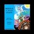

<!DOCTYPE html>
<html lang="en">
 <head>
<!-- Favicon -->
<link rel="shortcut icon" href="../../favicon.ico">
  <meta charset="utf-8"/>
  <title>
   Full Audiobook of the "Conspiracy Bible"
  </title>
  <meta content="Post on /v/Conspiracy from 2015-06-26 by 33degree." name="description"/>
  <meta content='Full Audiobook of the "Conspiracy Bible"' property="og:title"/>
  <meta content="Post on /v/Conspiracy from 2015-06-26 by 33degree." property="og:description"/>
  <link href="../../static/css/page.css" rel="stylesheet"/>
  <meta content="https://voat.conspiracy.hackliberty.org/thumbnails/24/2b/242b7b87-a796-4a95-a141-6fca51f3d499.jpg" property="og:image"/>
  <meta content="https://voat.conspiracy.hackliberty.org/v/conspiracy/171084.html" property="og:url"/>
  <meta content="width=device-width, initial-scale=1" name="viewport"/>
  <link href="https://voat.conspiracy.hackliberty.org/v/conspiracy/171084.html" rel="canonical"/>
  <meta content="article" property="og:type"/>
  <meta content="Voat /v/Conspiracy Archive" property="og:site_name"/>
  <meta content="en_US" property="og:locale"/>
  <meta content="summary_large_image" name="twitter:card"/>
  <meta content='Full Audiobook of the "Conspiracy Bible"' name="twitter:title"/>
  <meta content="Post on /v/Conspiracy from 2015-06-26 by 33degree." name="twitter:description"/>
  <meta content="https://voat.conspiracy.hackliberty.org/thumbnails/24/2b/242b7b87-a796-4a95-a141-6fca51f3d499.jpg" name="twitter:image"/>
 </head>
</html>
<body class="dark">
 <div id="container">
  <!-- array (
  'submissionid' => 171084,
  'creationDate' => '2015-06-26 00:40:49',
  'domain' => 'youtube.com',
  'formattedContent' => NULL,
  'isAdult' => 0,
  'isAnonymized' => 0,
  'subverse' => 'Conspiracy',
  'thumbnail' => '242b7b87-a796-4a95-a141-6fca51f3d499.jpg',
  'title' => 'Full Audiobook of the "Conspiracy Bible"',
  'url' => 'https://www.youtube.com/watch?v=4w4oyP6Eq6Y',
  'userName' => '33degree',
  'archivedLink' => NULL,
  'archivedDomain' => NULL,
  'isDeleted' => 0,
) -->
  <div style="text-align:center; font-size:24px; font-weight:bold;">
   <a href="../../index.html" style="text-decoration: none; color: inherit;">
    Voat /v/Conspiracy Archive
   </a>
  </div>
  <div class="content" role="main">
   <div class="sitetable linklisting" id="siteTable">
    <div class="submission id-171084 link type-text" id="submission-171084">
     <a name="submissionTop">
     </a>
     <p class="parent">
     </p>
     <a class="thumbnail may-blank" href="https://www.youtube.com/watch?v=4w4oyP6Eq6Y" target="_self">
      
     </a>
     <div class="entry unvoted">
      <p class="title">
       <a class="title may-blank" href="https://www.youtube.com/watch?v=4w4oyP6Eq6Y" tabindex="1" target="_self" title='Full Audiobook of the "Conspiracy Bible"'>
        Full Audiobook of the "Conspiracy Bible"
       </a>
       <span class="domain">
        (
        <a href="https://archive.searchvoat.co/search.php?d=youtube.com">
         youtube.com
        </a>
        )
       </span>
      </p>
      <p class="tagline">
       submitted
       <time datetime="2015-06-26T00:40:49+00:00" title="06/26/2015 12:40:49 AM">
        2015-06-26T00:40
       </time>
       by
       <span class="userattrs">
        <a class="author may-blank" href="https://archive.searchvoat.co/search.php?u=33degree">
         33degree
        </a>
       </span>
      </p>
      <ul class="flat-list buttons">
       <li class="first">
        <a class="comments may-blank" href="https://archive.searchvoat.co/v/Conspiracy/171084" rel="nofollow">
         2 comments
        </a>
       </li>
      </ul>
     </div>
     <div class="child">
     </div>
     <div class="clearleft">
     </div>
    </div>
    <div class="clearleft">
    </div>
   </div>
   <div class="horizontal-line">
   </div>
   <div class="commentarea">
    <div class="sitetable nestedlisting" id="siteTable">
     <div class="child id-473810 comment even" style="">
      <div class="entry unvoted">
       <div class="noncollapsed" id="473810" style=";">
        <p class="tagline">
         <a class="author may-blank" href="https://archive.searchvoat.co/search.php?u=Mumberthrax">
          Mumberthrax
         </a>
         <span class="userattrs">
         </span>
         <time datetime="2015-06-26T00:46:47+00:00" title="6/26/2015 12:46:47 AM">
          2015-06-26T00:46
         </time>
        </p>
        <div class="usertext-body may-blank-within" id="commentContent-473810">
         <div class="md">
          <p>
           <p>
            Nice find! Some very interesting stuff in this one. From what I understand cooper later recanted some elements in it, claiming the information he was fed was false/disinformation, so it's hard to say - I don't have a source for this though so take it with a grain of salt either way.
           </p>
          </p>
         </div>
        </div>
        <ul class="flat-list buttons">
         <li class="first">
          <a class="bylink" href="https://archive.searchvoat.co/v/Conspiracy/171084/473810" rel="nofollow">
           link
          </a>
         </li>
        </ul>
       </div>
      </div>
      <div class="child id-473856 comment odd" style="">
       <div class="entry unvoted">
        <div class="noncollapsed" id="473856" style=";">
         <p class="tagline">
          <a class="author may-blank" href="https://archive.searchvoat.co/search.php?u=33degree">
           33degree
          </a>
          <span class="userattrs">
          </span>
          <time datetime="2015-06-26T00:50:22+00:00" title="6/26/2015 12:50:22 AM">
           2015-06-26T00:50
          </time>
         </p>
         <div class="usertext-body may-blank-within" id="commentContent-473856">
          <div class="md">
           <p>
            <blockquote>
             <p>
              From what I understand cooper later recanted some elements in it, claiming the information he was fed was false/disinformation, so it's hard to say
             </p>
            </blockquote>
            <p>
             The Krill documents that were given to him by John Lear was what he realized was disinfo. You're right that at one time he did believe aliens but towards the end realized it was discrediting tactic. That's not to say the UFO he saw was disinfo, he ended believing that all the aliens documents he saw were meant as a cover story for new propulsion systems that had been developed in the Skunkworks.
            </p>
           </p>
          </div>
         </div>
         <ul class="flat-list buttons">
          <li class="first">
           <a class="bylink" href="https://archive.searchvoat.co/v/Conspiracy/171084/473856" rel="nofollow">
            link
           </a>
          </li>
         </ul>
        </div>
       </div>
      </div>
     </div>
    </div>
   </div>
  </div>
 </div>
<!-- Footer Section -->
<footer class="container-fluid mt-3">
  <p class="small mb-0">
    /v/conspiracy archive has 42504 posts and 159856 total comments.
    <a href="https://git.hackliberty.org/c0mmando/voat-conspiracy-archive/">source code</a>.
  </p>
</footer>

<script src="../../static/js/jquery-3.7.1.slim.min.js"></script>
<script src="../../static/js/comments-toggle.js"></script>

</body>
